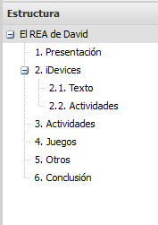

1.6. Practicamos...
1. ...con el primer texto
Vamos a crear nuestro primer recurso con eXe y para ello seguiremos los siguientes pasos:
Tarea 1
Abrimos un nuevo proyecto y lo guardamos (“Guardar como”) con el nombre “miarchivo.elp”.
Vamos a la pestaña Propiedades y rellenamos los siguientes campos:
- Título, El REA de ... (tu nombre).
- Idioma, el que corresponda.
- Descripción general, habla un poco sobre el recurso, sus objetivos, etc.
- Autor, tu nombre completo
- Licencia, la que corresponda. Los recursos REA de la Junta de Andalucía son de tipo CC BY-NC-SA (para más información, visita esta página)
No olvidemos pulsar en “Guardar” antes de volver a la pestaña “Contenido”. (Más información en VÍDEO: Pestaña de Propiedades).
Pestaña de Contenido
La página “Inicio” es la principal, a partir de ella se crean páginas y subpáginas para diseñar la estructura del recurso. Renombramos esta página con el título “El REA de ...”. Esta será la portada del recurso con lo que, más adelante, insertaremos una imagen.
Páginas
- Ahora añadiremos varias páginas para crear la estructura bajo la portada “El REA de...” (VÍDEO : Cómo crear una estructura de nodos).
- A continuación modificamos los nombres de las páginas que hemos creado nombrándolas de la siguiente manera: “1. Presentación", "2. iDevices”, “3. Actividades“, "4. Juegos", "5. Otros" y "6. Conclusión".
Subpáginas
- Creamos dos subpáginas dentro del nodo “iDevices” llamadas como Actividades y Texto.
- Cambiamos el orden de las páginas para que aparezca primero “Texto” (VÍDEO: Cómo reordenar una estructura de nodos).
- Renombra estos nodos y añade la numeración 2.1 y 2.2 como aparece en la imagen.
- Como reto, ¿serías capaz de colocar el nodo Actividades entre los nodos 1 y 2? ¿Y como subpágina del nodo 1? Si lo consigues, vuelve a colocarla donde estaba. ¡Enhorabuena!
iDevice de texto
- Elige el nodo 1 y añade un bloque de Texto.
- El título puedes dejarlo en blanco o escribir algo, por ejemplo Bienvenidos. Si has escrito un título, añade un icono. En caso contrario, estéticamente no es recomendable.
- Realiza una breve presentación de quién eres, que materia impartes y en qué Centro.
- Da formato al texto a tu gusto (negrita, cursiva, justificado, colores ...)
- Usa viñetas o numeración para describir un poco cuáles son tus objetivos y/o expectativas tras este curso.
- A través de esta página, busca, descarga y sube una imagen al iDevice. No es recomendable copiar y pegar ya que usa el mismo nombre para todas. Por último, no cierres la página.
- Escribe en Descripción y Título la frase "Mi imagen".
- Limita el ancho a 240
- En avanzado, posiciónala a la derecha.
- En el apartado Retroalimentación, cambia el texto del botón por "Para saber más sobre mí..." y añade al contenido alguna direcciones Web, correos electrónicos, redes sociales, ...
- Guarda el iDevice pulsado en el icono Hecho bajo el iDevice.
iDevice Contenido DUA
- En el mismo nodo, a modo de comparativa, inserta un bloque Contenido DUA.
- Puedes elegir el tipo de iDevice (Implicación, Compresión o Expresión) y afectará al color que tomará el iDevice y sus elementos.
- Copia todo el texto anterior (excepto la retroalimentación) y pégalo en este iDevice. Observarás que pierde el formato. Selecciona y borra lo pegado.
- Para que al pegar no se pierda el formato, se debe desactivar el icono Pegar con/sin formato.
- Crea un nuevo bloque (+) dentro del iDevice y escribe en el botón "Para saber más sobre mí...". Elige un personaje si lo deseas.
- Copia y pega el texto de retroalimentación del iDevice anterior.
- Selecciona la imagen y pulsa sobre el icono de Insertar/editar imagen. Podrás modificar sus características. Allí, añade lo siguiente:
- Vuelve a la página donde descargaste la imagen y, en los detalles, copia y pega la información que se solicita en el apartado Título y reconocimiento. Este paso es MUY IMPORTANTE si utilizas imágenes sacadas de Internet.
- Guarda el iDevice.
Estilo
- Prueba los diferentes estilos que tienes instalado.
- Elige el estilo EducaAnd Escolares Oficial finalmente. Si no encuentras este estilo, puedes descargarlo desde aquí.
Guardamos el recurso que acabamos de crear.
En la siguiente página o pulsando aquí puedes ver el resultado.
2. ... con DUA
Vamos a crear nuestro primer recurso con eXe y para ello seguiremos los siguientes pasos:
Tarea 2
iDevice Contenido DUA
- En el mismo nodo, a modo de comparativa, inserta un bloque Contenido DUA.
- Puedes elegir el tipo de iDevice (Implicación, Compresión o Expresión) y afectará al color que tomará el iDevice y sus elementos.
- Copia todo el texto anterior (excepto la retroalimentación) y pégalo en este iDevice. Observarás que pierde el formato. Selecciona y borra lo pegado.
- Para que al pegar no se pierda el formato, se debe desactivar el icono Pegar con/sin formato.
- Crea un nuevo bloque (+) dentro del iDevice y escribe en el botón "Para saber más sobre mí...". Elige un personaje si lo deseas.
- Copia y pega el texto de retroalimentación del iDevice anterior.
- Selecciona la imagen y pulsa sobre el icono de Insertar/editar imagen. Podrás modificar sus características. Allí, añade lo siguiente:
- Vuelve a la página donde descargaste la imagen y, en los detalles, copia y pega la información que se solicita en el apartado Título y reconocimiento. Este paso es MUY IMPORTANTE si utilizas imágenes sacadas de Internet.
- Guarda el iDevice.
¿Cómo debe quedar mi actividad?
En la siguiente página o pulsando aquí puedes ver el resultado.
3. ... cambiando el estilo
Tarea 3
Estilo
- Prueba los diferentes estilos que tienes instalado.
- Elige el estilo EducaAnd Escolares Oficial finalmente. Si no encuentras este estilo, puedes descargarlo desde aquí.
Guardamos el recurso que acabamos de crear.
Reflexión
¿Qué diferencias y qué similitudes encontráis más interesantes entre los dos bloques?
Obra publicada con Licencia Creative Commons Reconocimiento Compartir igual 4.0